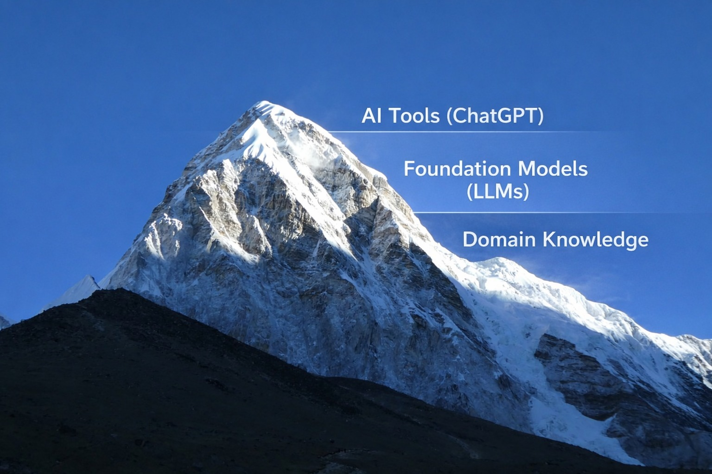

AI เพี้ยนทั้งระบบ ถ้าเรายังเข้าใจผิดแบบนี้
{kind=link}

บทความนี้ตั้งข้อสังเกตอย่างแรงว่า ระบบกำลังเข้าใจ AI ผิดทั้งระบบ ตั้งแต่การขออัตราด้าน AI ในแทบทุกสาขา ไปจนถึงนโยบาย “AI เพื่อการ…” ที่จบลงด้วยการซื้อเครื่องมือมาใช้งานแบบผิวเผิน ขณะที่การพัฒนา AI เชิงลึกและฐานความรู้จริงกลับแทบไม่ได้รับความสำคัญ
ผู้เขียนชี้ให้เห็นความย้อนแย้งว่า งานที่พยายามทำ AI อย่างจริงจังกลับถูกผลักไปอยู่ในโหมด research ที่เขียน impact ยากและไม่ได้รับการสนับสนุน ในขณะที่ระบบกลับชอบ quick win ที่ดูใช้งานได้เร็ว แต่สุดท้ายเป็นของที่ “ละลายน้ำ” และไม่เหลืออะไรในระยะยาว
แกนสำคัญของโพสต์นี้คือการแยกระหว่าง AI literacy กับ AI expert ผู้เขียนยอมรับว่าการพัฒนาคนให้ใช้ AI เป็นนั้นถูกต้องและจำเป็น แต่เตือนว่าหากระบบใช้คำว่า AI expert ในเชิงนโยบายอย่างเลื่อนลอย สิ่งที่ได้จริงจะเป็นเพียง super AI user หรือผู้ใช้เครื่องมือที่เก่งขึ้น แต่ยังคงเป็นผู้ใช้
สิ่งที่ระบบกำลังแลกไปคือ domain expert
ประเด็นที่หนักแน่นที่สุดของบทความอยู่ที่การเตือนว่า สิ่งที่เรากำลังแลกไปเพื่อให้ได้ AI-user expert คือ Domain expert ทั้งที่ในหลายพื้นที่ซึ่งประเทศยังแข่งขันได้จริง เราต้องการคนที่ลึกในโดเมนมากกว่าผู้ใช้เครื่องมือ AI ที่เก่งขึ้นเพียงอย่างเดียว
มุมนี้ทำให้บทความก้าวพ้นการถกเรื่องทักษะ มาเป็นการถกเรื่องโครงสร้างกำลังคนของประเทศ: หากทุกสาขาหันไปผลิต generalist ที่ใช้ AI เป็นแต่ไม่ลึกในอะไรสักอย่าง ระบบจะสูญเสียทั้งความสามารถในการสร้าง AI และความสามารถในการเอา AI ไปแก้ปัญหาจริง
AI ที่ไม่มี domain คือของเล่น และ domain ที่ไม่มี AI คือของเก่า
ข้อสรุปของโพสต์นี้คมมาก เพราะไม่ได้เลือกข้างระหว่าง AI กับ domain knowledge แต่ชี้ว่าทั้งสองอย่างต้องถูกเชื่อมกันอย่างถูกต้อง: AI ที่ไม่มี domain คือของเล่น และ domain ที่ไม่มี AI คือของเก่า
ดังนั้น สิ่งที่ระบบต้องการจริงไม่ใช่ AI generalist ที่ลอย หรือ domain expert ที่ปฏิเสธเทคโนโลยี แต่คือ คนที่ยืนกลางสองโลก และเชื่อมความเข้าใจเชิงลึกของปัญหากับศักยภาพของ AI ได้อย่างมีความหมาย หากไม่มีคนแบบนี้ ระบบก็มีโอกาสล่มทั้งในเชิงนโยบายและเชิงปฏิบัติ